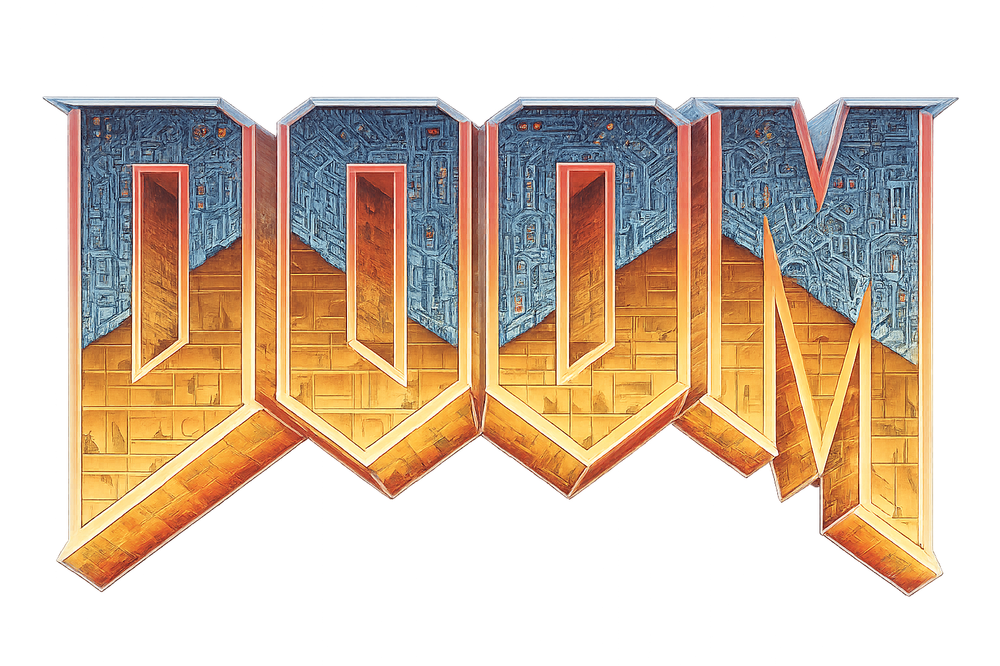

Introducción
El objetivo de este trabajo es analizar la posibilidad de ejecutar DOOM en distintos sistemas operativos y dispositivos antiguos o de bajo rendimiento, como Mac OS X 10.6.8, watchOS y PalmOS 3.5.
Hipótesis
DOOM puede ejecutarse en Mac OS X 10.6.8, watchOS y PalmOS 3.5 gracias a sus bajos requisitos y a las adaptaciones realizadas por la comunidad.
Desarrollo
Se realiza un análisis comparativo entre tres dispositivos: Palm M100, Apple Watch Series 7 y iMac Late 2006, evaluando CPU, memoria RAM, almacenamiento y sistema operativo.